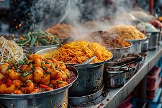

The taj Mahal, a symbol of eternal love
The Qutub Minar,an architectural marvel in Delhi
India is a land of incredible diversity From the snow-capped peaks of the Himalayas
to the serene backwaters of Kerala,everycomer of India tells a unique story.India is the second-most
populaous country in the world and boasts a history spanning thousands of years. Its rich traditious have left an indelible mark on the world.

India: A land of cultural and geographical diversity
"Unity in diversity is not just a slogen in India but a way of life."
Highlights df India include :
India is home to 29 UNESCO world Heritage Sites,making it a paradise for history and architecture enthusiasts.
The taj Mahal, a symbol of eternal love
The Qutub Minar,an architectural marvel in Delhi
Don't miss exploring the intricate carvings,towering minarets and breathtaking landscapes!
India's cultural heritage is a blend of various tradition,languages,and religions. Each region its unique identity and tradition that are celebrated through festivals and daily life .Here are some
highlights:
A glimpse of Indian classical Dance
Indian food is as diverse as its culture. From the fiery curries of the south to the hearty bread of the north,there's something for everyone. popular dishes include:
Delicious Hederabadi Biryani
Colorful and flavorful Indian street food.